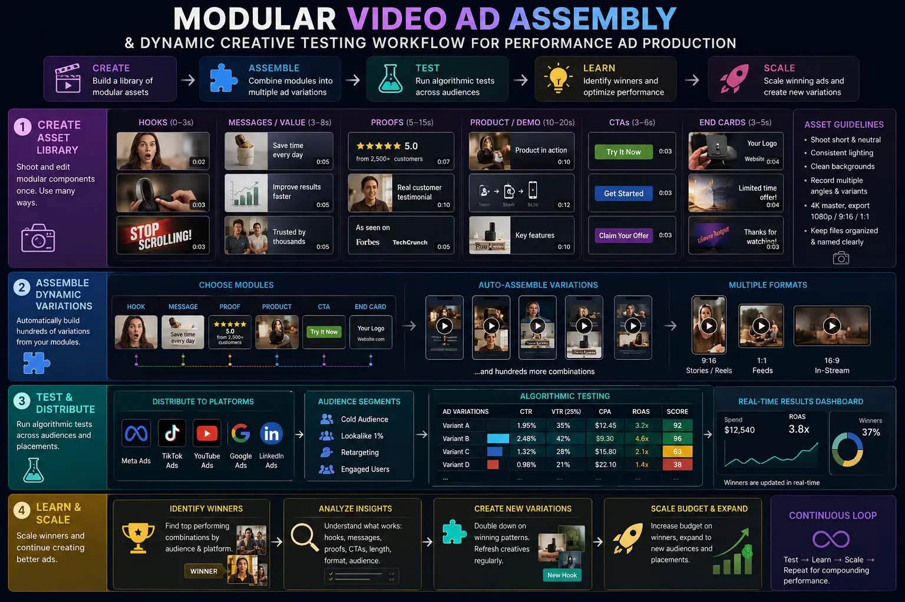
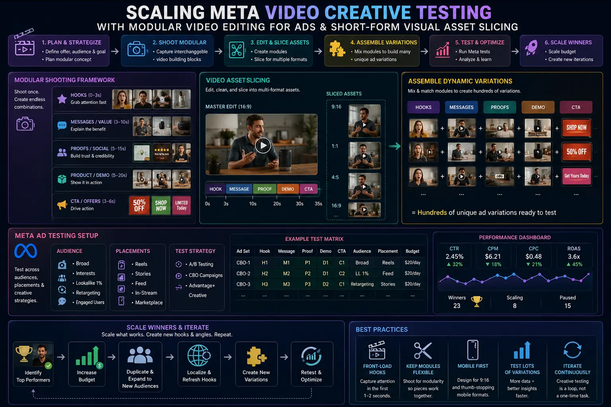

How to Shoot and Edit Modular Video Components for Algorithmic Ad Testing
The Death of Monolithic Commercials: Why Modern Ad Algorithms Demand Modular Components
For decades, commercial video production followed a linear, singular doctrine: conceive one grand creative narrative, script a 30-second storyline, shoot it meticulously over days, and craft a single hero edit to broadcast across media channels. In the era of algorithmic paid social advertising — dominated by Meta Advantage+, TikTok Smart Performance Campaigns, and YouTube Demand Gen — that traditional monolithic workflow is fundamentally broken. Today's machine-learning auction algorithms do not optimize for subjective artistic perfection; they optimize for dynamic audience micro-segment matching and real-time creative fatigue mitigation.
When a single static video ad is deployed into Meta's ad auction, it hits performance saturation within days. The algorithm rapidly exhausts the subset of users who respond to that specific hook visual or narrative angle, causing Customer Acquisition Costs (CAC) to surge and Click-Through Rates (CTR) to plummet. Modern growth marketing requires high-velocity creative iteration, but filming 30 distinct full-length commercials every month is financially unfeasible for most brands. The solution lies in shifting from linear production to Modular Video Ad Assembly.
By embracing Modular Video Ad Assembly, performance marketing teams and video production studios decouple the traditional video ad into standardized, interchangeable building blocks: high-impact hooks, core body demonstrations, social proof validation cards, and compelling calls-to-action (CTAs). Instead of producing one finished video per shoot, a single production session engineered around dynamic creative optimization shoots generates an expandable matrix of assets. When paired with Short-Form Visual Asset Slicing and Modular video editing for ads, media buyers gain the power to combine 5 distinct hooks, 3 core body variations, and 2 CTA options into 30 unique ad permutations — giving ad platform algorithms the exact creative diversity needed to achieve scaling Meta video creative testing while maintaining lean production budgets.
Deconstructing the Modular Matrix: The Four Pillars of Video Component Architecture
To successfully implement Modular Video Ad Assembly, creative directors and editors must view video timelines as modular software code rather than linear stories. Each component must be engineered with precise structural duration, visual continuity, and independent narrative coherence.
- Pillar 1: The Hook Layer (0–3 Seconds). The opening 3 seconds dictate whether an ad lives or dies in the feed. The sole purpose of the hook is to generate a visual pattern interrupt that halts the user's scrolling thumb. In a modular production workflow, the team shoots 4 to 8 distinct visual and auditory hook variations for a single product. These include problem-agnostic visual interrupts (e.g., extreme close-ups, speed ramps, unexpected props), curiosity-driven question hooks, direct benefit assertions, and negative-angle warnings ("Stop making this mistake when..."). Mastering the art of shooting video ad hooks requires capturing identical framing transition points so editors can seamlessly bridge any hook into the primary body footage.
- Pillar 2: The Core Body & Mechanism Layer (3–15 Seconds). Once attention is captured, the body component delivers the value proposition, explains the product's unique mechanism of action, or demonstrates problem resolution. In performance ad production, body variations are categorized by narrative style: one variation focuses on technical product specs and macro close-ups, another utilizes energetic UGC lifestyle usage, while a third emphasizes comparison against inferior alternatives. Each body block must function independently without relying on specific spoken references to the hook that preceded it.
- Pillar 3: The Social Proof & Trust Layer (15–22 Seconds). Modern digital scrollers are inherently skeptical. The social proof component reinforces credibility using interchangeable visual trust signals: customer video review overlays, star rating graphic badges, press logo callouts, or rapid-fire unboxing montages. By keeping social proof blocks modular, post-production teams can rapidly update trust badges as new customer milestones or press mentions occur without re-editing the entire video.
- Pillar 4: The Offer & Call-to-Action Layer (End Cards). The closing component provides explicit direction on what action the viewer should take next. Modular CTAs test different commercial incentives: discount codes, free shipping thresholds, bundle bonuses, or risk-free trial guarantees. By isolating the CTA onto an interchangeable end card frame, media buyers can run promotional shifts (e.g., flash sales vs standard offers) by simply swapping the final 3-second render.
Exponential Ad Permutations
A single shoot yielding 5 hooks, 3 bodies, and 2 CTAs creates 30 distinct video ad variations. This exponential asset leverage provides ad platform machine-learning models with rich creative fuel for Dynamic Creative Video Testing.
Surge in Creative Longevity
When a high-performing ad begins to experience creative fatigue, media buyers do not need to replace the entire video. Swapping out just the burnt-out 3-second hook with a fresh visual variation instantly resets ad fatigue and restores top-tier CTRs.
Drastic CAC Reduction
Algorithmic platforms reward high-engagement ads with lower eCPM auction bids. By systematically matching optimal hooks to targeted audience segments, modular testing consistently drives down customer acquisition costs.
Streamlined Production ROI
Batch-shooting interchangeable components reduces per-ad production costs by up to 80% compared to traditional standalone video shoots, drastically maximizing return on video production investment.

Production Day Mastery: How to Execute Dynamic Creative Optimization Shoots
Executing successful dynamic creative optimization shoots requires meticulous pre-production planning and rigorous onset discipline. Without structured shot lists designed for modular assembly, batch shoots can quickly devolve into chaotic footage that fails to assemble cleanly in post-production.
The foundation of a modular shoot is the Asset Matrix Script. Prior to production day, the director and performance marketer map out every component variant on a grid. Shoot day is structured sequentially by component type rather than linear narrative order:
- Phase 1: Dedicated Hook Sprinting. The first two hours of the shoot are dedicated strictly to shooting video ad hooks. Talent stands at a fixed mark with identical lighting and camera distance, delivering 6–8 distinct opening line variations and action movements. Standardizing talent framing (e.g., medium close-up at eye level) across all hook takes ensures that any hook can jump-cut or match-cut into the body footage without visual jarring or eye-trace distraction.
- Phase 2: High-Speed B-Roll & Visual Pattern Interrupts. The camera crew captures rapid-fire macro b-roll, hands-on product interaction, tactile textures, and physical motion triggers (e.g., dropping the product into frame, splashing water, slicing packaging). These micro-assets form the visual foundation for Short-Form Visual Asset Slicing during post-production.
- Phase 3: Core Body & Value Proposition Takes. Talent records the main narrative demonstrations. Each value proposition is recorded in 2–3 distinct emotional tones: hyper-energetic UGC style, calm authority expert style, and relatable problem-solution storytelling.
- Phase 4: Audio-Led vs. Soundless Visual Cues. Over 65% of social media users consume feed video with sound toggled off. During production, every key statement must be accompanied by explicit visual actions (pointing to screen zones for text placement, holding up physical items) so the modular components communicate effectively with or without voiceover audio.
Post-Production Blueprint: Modular Video Editing for Ads
In the editing bay, Modular video editing for ads demands an engineered approach to project organization inside non-linear editing (NLE) software like Adobe Premiere Pro, DaVinci Resolve, or Final Cut Pro.
Editors begin by building a Master Modular Timeline Template. The project is organized using nested sequences and color-coded track structures:
- Standardized Audio Anchor Points: Audio levels, voiceover equalization, and background sound effects are assigned to dedicated sub-mix busses. Hook audio clips are trimmed to end at exact marker frames (e.g., 00:00:02:20), allowing seamless audio crossfades into the main body track regardless of which hook is selected.
- Nested Component Containers: Hooks, bodies, social proof pop-ups, and CTAs are contained inside separate nested sequences. To render a new ad permutation, the editor simply toggles visibility or swaps the nested sub-sequence in the master timeline.
- Dynamic Text & Motion Graphics Templates (MOGRTs): Captions and graphic overlays are linked to master style sheets. Utilizing kinetic typography and high-contrast text boxes ensures sound-off readability across vertical (9:16), square (1:1), and horizontal (16:9) aspect ratios.
- Automated Batch Rendering & File Naming Conventions: High-volume performance ad production requires strict asset taxonomy. Exported files must follow structured naming conventions (e.g., `BRAND_PRODUCT_H01_B02_CTA01_9x16.mp4`). This taxonomy enables media buyers to accurately log and analyze which specific component combinations are winning in the ad account.
Meta Advantage+ & Dynamic Creative
- Structure: Upload 3–5 modular hooks and 2–3 body variations into Meta DCT units.
- Algorithm Goal: Allows Meta's AI to automatically pair optimal hook visuals with high-converting bodies per user profile.
- Key Metric: 3-Second Hook Rate (3-sec views / Impressions) and Outbound CTR.
TikTok & UGC Assembly
- Structure: Native 9:16 vertical edits with rapid 0.8s jump cuts and sound-first trending audio tracks.
- Algorithm Goal: Maximizes early watch time and completion rate signals on TikTok For You Page feeds.
- Key Metric: 2-Second View Rate and Average Watch Duration.
YouTube Shorts & Demand Gen
- Structure: Narrative curiosity hooks with clean motion graphic overlays and explicit value payoffs.
- Algorithm Goal: Sustains viewer retention through mid-roll demonstrations and drives high-intent clicks.
- Key Metric: Retained View Percentage at 5s and Conversion Rate.

Algorithmic Media Buying: Scaling Meta Video Creative Testing with Modular Assets
Once modular video permutations are rendered, the strategic battlefield shifts to paid media deployment. Scaling Meta video creative testing requires a disciplined media buying framework that isolates variables and lets machine learning determine winning creative combinations.
In Meta Ads Manager, media buyers utilize Advantage+ Dynamic Creative (DCT) or dynamic creative ad sets. Rather than uploading 30 pre-rendered complete ads into separate ad units — which fragments ad set budget learning — buyers upload 3 distinct hook video clips, 2 body video clips, and multiple text/headline options into a single dynamic creative asset sandbox.
Meta's algorithm dynamic engine combines these components in real time during the auction, serving customized ad renders to individual users based on historical consumption preferences. For example, a user who frequently engages with fast-paced visual cuts receives `Hook 01 + Body 02`, while a user who prefers direct problem assertions receives `Hook 03 + Body 01`.
Media buyers evaluate performance using a two-tier diagnostic metric framework:
- Diagnostic Metric 1: Hook Rate (3-Second Video Play / Impressions). This measures pure hook efficiency. If an ad permutation achieves a Hook Rate above 35%, the opening 3-second hook is successfully stopping the scroll. If Hook Rate is below 20%, the hook visual must be retired immediately.
- Diagnostic Metric 2: Hold Rate (ThruPlays / 3-Second Video Plays). This measures body retention. If Hook Rate is high but Hold Rate is low, the opening hook successfully captured attention, but the body content failed to sustain interest or deliver on the hook's promise.
By evaluating Hook Rate and Hold Rate independently, performance marketing teams can perform surgical creative iterations. If a campaign's performance dips due to ad fatigue, the team keeps the high-holding body footage intact and simply swaps in 3 new modular hooks generated from Short-Form Visual Asset Slicing. This surgical iteration cycle resets ad decay instantly, keeping customer acquisition costs stable and unlocking sustainable monthly ad spend scaling.
Conclusion: Transforming Creative Production into a Predictable Growth Engine
The transition from traditional linear video production to Modular Video Ad Assembly represents a fundamental paradigm shift in digital advertising. In an environment governed by machine-learning algorithms and hyper-competitive auction bidding, the brands that win are not those that spend months polishing a single commercial, but those that build systematic creative engines capable of continuous Dynamic Creative Video Testing.
By mastering dynamic creative optimization shoots, implementing disciplined protocols for shooting video ad hooks, executing precise Modular video editing for ads, and leveraging Short-Form Visual Asset Slicing, brands can generate dozens of high-performing ad variations from a single production session. This modular framework powers scaling Meta video creative testing, protects campaigns against creative fatigue, and drives predictable, profitable revenue growth.
At The PhD Ads in Madurai, we specialize in high-velocity performance ad production, Modular Video Ad Assembly, and end-to-end Dynamic Creative Video Testing. Our expert team scripts, shoots, and edits modular video component matrices tailored specifically to unlock performance scaling across Meta, TikTok, and YouTube ad auctions.
Key Topics
Ready to Scale Ad Performance with Modular Video Asset Assembly?
At The PhD Ads in Madurai, we specialize in short-form visual asset slicing, modular video ad assembly, dynamic creative video testing, and performance ad production engineered to scale Meta video creative testing and maximize return on ad spend.
Email: team@e2o.in